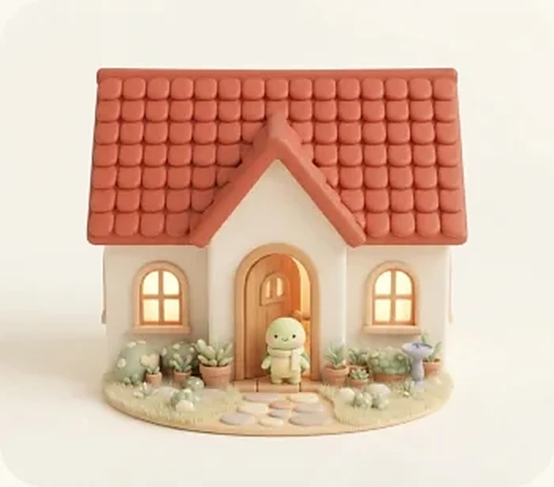
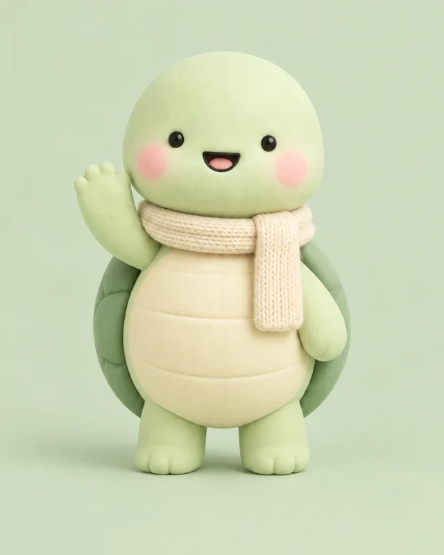
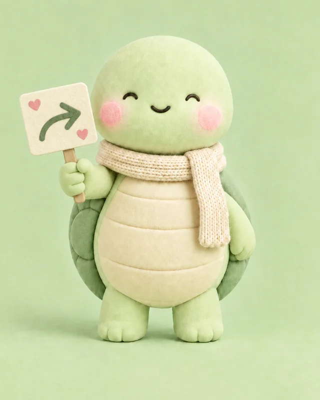
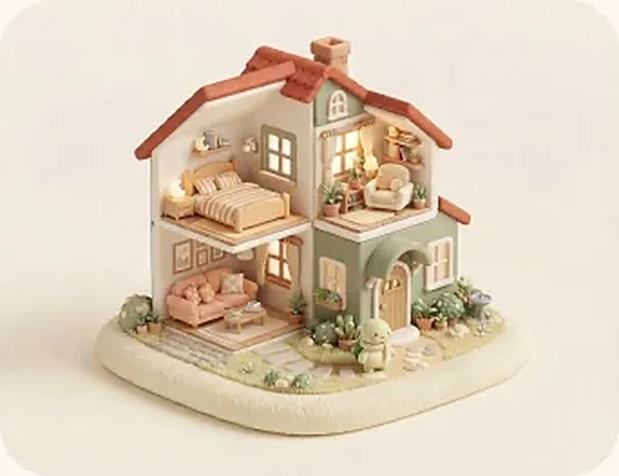

바름이네
휴대폰 하다 지치면, 바름이네 놀러 와


어서 와!
3분만 쉬어 가자.
바름이네
안녕! 나는
거북이 바름이야.

휴대폰 보느라 지친 친구들을
우리 집에 초대해서 같이 쉬어.
너랑 닮은 모습은?
내 정보에서 언제든 바꿀 수 있어.
숙이야,
이렇게 쉬어 가자!
-
1휴대폰 습관을 살펴봐고개 숙임 · 화면 가까이 · 오래 사용 · 밤 사용
-
2쌓이면 초대장을 보내"고개를 20분 숙였어. 거실에서 목 풀자!"
-
3바름이네서 3분 쉬고 와습관에 맞는 방에서 같이 풀어
목, 눈, 몸, 잠까지 습관에 맞춰 쉬어 가.
쉬고 나면 바름이 일기에 도장을 찍어 줄게.
쉬어 갈 때가 되면
내가 알려 줄게.

이렇게 살펴볼게
- 📱 기울기 센서고개를 얼마나 숙였는지
- 👀 앞 카메라화면이랑 얼마나 가까운지 · 켤 때만, 영상 저장 안 해
- ⏱️ 시계오래 쓰는지, 밤에 쓰는지
바름이네를 켜 둔 동안만 살펴봐. 권한은 내 정보에서 바꿀 수 있어.
11월 17일 화요일
어서 와, 숙이야!
어디서 쉬어 갈래?

거실에서 3분만
목 풀고 갈래?
오늘의 습관
쉼 기록
휴대폰을 손에 들면 자세를 살펴볼게.
오늘의 습관
센서 대기 중
시간대별 고개 숙임
오늘 · 분
최근 쉼
이번 주에 0번 놀러 왔어!
요일별 놀러 온 횟수
방별 방문
바름이의 한 줄 요약
아직 기록이 적어. 며칠만 같이 지내 보자!
내 정보
무료 · 거실 목 쉼
감지 설정
시연 모드
센서가 없는 컴퓨터에서도 기울기를 흉내 낼 수 있어.
거실 · 목 쉼
턱 당기기
턱을 뒤로 쏙 당겨. 뒷목이 길어지는 느낌!
쉼 완료
잘했어, 숙이야!
목이 한결 가볍지?
사용 설명서
바름이네는 휴대폰 볼 때
목 건강을 지켜 주는 앱이야.
이렇게 돌아가
- 1바름이가 자세를 살펴봐
휴대폰 기울기로 고개를 얼마나 숙였는지 세. 앱을 켜 둔 동안만 살펴봐.
- 2오래 숙이면 초대장이 와
고개 숙인 시간이 기준(기본 20분)만큼 쌓이면 바름이가 집으로 불러.
- 3바름이네서 3분 쉬어
캐릭터 동작을 따라 하면서 목을 풀어. 바름이가 목소리로 알려 줘.
- 4일기에 도장 쾅
쉬고 나면 기록이 쌓이고, 고개 숙임 시간은 다시 0부터 세.
바름이는 이렇게 알아채
따로 기계 없이 휴대폰에 원래 있는 센서랑 시계만 써.
휴대폰을 바닥 쪽으로 눕혀 들수록 고개도 숙여져. 그래서 휴대폰 기울기로 고개를 얼마나 숙였는지 짐작해. 책상에 내려놓은 건 안 세.
앞 카메라로 화면 속 얼굴이 얼마나 큰지만 봐. 얼굴이 화면 반 넘게 2초 이상 커지면 너무 가까운 거야. 영상은 저장하지 않아.
앱을 쉬지 않고 쓴 시간을 세. 오래 붙잡고 있을수록 등이 굽고 목이 앞으로 나와.
밤 12시부터 새벽 5시 사이에 쓴 시간을 세. 누워서 보면 목이 꺾인 채로 오래 있게 돼.
지금은 웹 시연판이라 바름이네를 켜 둔 동안만 살펴볼 수 있어. 화면을 끄거나 다른 앱으로 가면 잠깐 쉬어.
앞으로 나올 안드로이드 앱에서는 유튜브나 SNS를 보는 중에도 뒤에서 살펴보다가, 쉴 때가 되면 알림으로 초대장을 보내 줄 거야.
홈 화면 보는 법
바름이가 살펴보는 중 카드에서 지금 자세랑 초대장까지 남은 시간을 볼 수 있어.
기다리기 싫으면 바로 쉬러 가기나 방을 눌러.
방 4개
턱 당기기, 옆목 늘리기, 가슴 펴기
화면이 너무 가까우면 초대해
쉬지 않고 오래 쓰면 초대해
자정 넘어 쓰면 초대 (준비 중)
탭 메뉴
쉼 기록 오늘 몇 시에 고개를 많이 숙였는지, 지금 자세
바름이 일기 이번 주에 몇 번 놀러 왔는지, 바름이 한 줄 요약
내 정보 캐릭터 바꾸기, 초대 기준, 화면 거리 감지, 요금제
알아 두면 좋아
아이폰은 처음에 센서 권한 허용을 눌러야 살펴볼 수 있어.
화면 거리 감지는 앞 카메라로 얼굴 크기만 봐. 영상은 저장하지 않아.
컴퓨터에서는 내 정보 → 시연 모드로 기울기를 흉내 낼 수 있어.
지금은 웹 시연판이라 바름이네를 켜 둔 동안만 살펴봐. 다른 앱을 쓰는 중에도 살펴보는 건 안드로이드 앱에서 할 거야.
요금제
숙이에게 맞는 쉼
편한 쉼을 골라 봐.
- 거실 목 쉼 무제한
- 습관 4가지 감지와 초대장
- 쉼 기록 · 이번 주 바름이 일기
- 바름이 목소리 · 빗소리
지금 이용 중이야
무료 기능 전부에 더해서
- 창가 눈 쉼 · 마당 몸 쉼 · 침실 잠 쉼까지 방 4개
- 숲·파도 배경 소리
- 지난 기록 전체 보기
- 매일 새로운 쉼 루틴
회사 복지 · 팀별 리포트
수업용 시연 화면이라 실제 결제는 되지 않아.
숙이야, 잠깐 쉬자!
고개를 1시간 넘게 숙였어.
거실에서 3분만 목 풀자.
마당은 플러스에서 열려
지금은 거실이랑 창가만 놀러 올 수 있어.